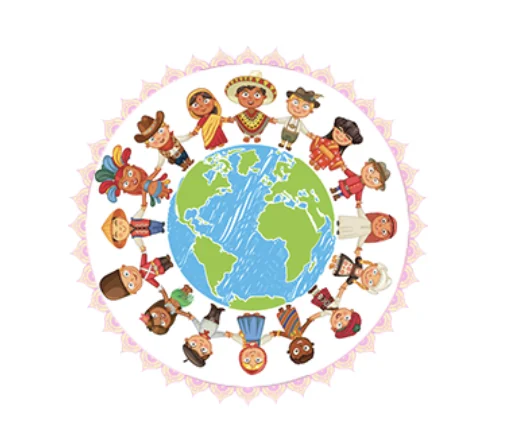

2024 Theme: Listen to the Future
November 20th is an important date as it is the date in 1959 when the UN General Assembly adopted the Declaration of the Rights of the Child. It is also the date in 1989 when the UN General Assembly adopted the Convention on the Rights of the Child. The work and life of Janusz Korczak formed the foundation for the Convention on the Rights of the Child. UNESCO declared 1978-1979 as the Year of Korczak to mark the centenary of his birth - this coincided with the UN Year of the Child.
Since 1990, World Children's Day also marks the anniversary of the date that the UN General Assembly adopted both the Declaration and the Convention on children's rights.
The theme: Listen to the Future encourages young people to talk about the future, the world they would like to grow up in and what would be very important to make the future a better place for every person.
As in Korczak’s words, children are the hope for the future, "Children aren't the people of tomorrow but are the people of today. They are entitled to be taken seriously. They have a right to be treated by adults with tenderness and respect, as equals. They should be allowed to grow into whoever they were meant to be. The unknown person inside each of them is the hope for the future." Janusz Korczak
Are adults listening to children's words? Do children participate in decisions and matters concerning them?
For every child, every right.
The 2024 theme for World Children’s Day, Listen to the Future is encouraging the world to actively listen to your hopes, dreams, and visions for the future, promoting your right to participation.
Young people should be empowered to voice their opinions about the world they want to live in, and it’s all of our responsibility to listen and support their visions.
Whoever you are, whatever your age, you and everyone else are all equally entitled to live your rights as equals without discrimination.
Find out more about Children’s Rights here.
On the Activities Page there are some suggestions about ways you can make your thoughts about the future in ways that others can Listen to the Future with your voice speaking, or through what you write and draw about your thoughts, hope and dreams for the future here (link to Activities Page)